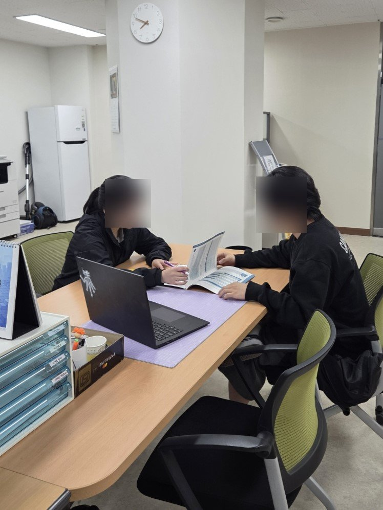

06. 사용자 리서치 — 인터뷰가 바꾼 설계¶
요약 — 20대 7명 심층 인터뷰 + 상담 전문가 현장 인터뷰. "약한 모습을 보이기 싫다"는 목소리가 커뮤니티 기능을 지웠고, "AI 위로는 정신승리"라는 회의론이 익명 응원(위로의 주체는 사람)을 만들었다. 다수 의견을 따르지 않은 결정과 그 이유까지 기록했다.
기획 단계에서 수행한 사전 조사와, 그 결과가 실제 설계 결정으로 이어진 과정의 기록이다. 모든 인용은 익명 처리했으며, 원문(인터뷰 전문·현장 기록)은 개인정보 보호를 위해 공개 저장소에 포함하지 않는다.
조사 개요¶
| 방법 | 대상 | 내용 |
|---|---|---|
| 심층 인터뷰 | 20대 초중반 남녀 7명 (1인·다인 가구, 직장인·사업자·대학원생, 다양한 성향) | 반구조화 설문 4개 섹션 — 일상·소통 습관 / 정서 교감·자기성찰 니즈 / 서비스 컨셉 반응 / 이용 의향·가격 수용선 |
| 현장 인터뷰 | 고립청년 분야 창업가, 상담 전문가 | 고립청년 시장의 실제 — "이미 고립된 사람은 서비스를 찾지 않는다" |
| 데이터 연구 | 서울시 시민생활 데이터 12,450명 | 통신 패턴 기반 고립 조기 탐지 (→ 01. 기획) |
발견 1. 니즈는 실재한다 — "꺼낼 곳이 없다"¶
"상대방이 힘들까봐 먼저 내 이야기를 꺼내지 않는 편입니다. 그래서 내면에 감정이 쌓이는 경우가 많습니다." — 26세 남성
"감정이 벅차오르는데 꺼낼 곳이 없을 때 외로움을 느낍니다." — 26세 남성
"타인에게 말하기 어려운 일이나 개인적인 문제들도 부담 없이 이야기할 수 있어서 좋을 것 같다." — 25세 남성
"그럴 땐 '그럴 수도 있어요' 같은 말 한마디면 충분히 위로가 됩니다. 해결책보단 공감이 먼저입니다." — 26세 남성
가까운 친구가 있는 사람들조차 "힘든 이야기"는 꺼내지 못하고 있었다. 문제는 관계의 부재가 아니라 약한 모습을 보일 수 있는 통로의 부재였다.
발견 2. 회의적인 목소리 — 그대로 기록한다¶
긍정 반응만 있었던 것이 아니다. 가장 아픈 지적들:
"매일 좋은 말만 해주는 챗봇과 소통하면 스트레스는 덜 받겠지만, 정신승리일 뿐이다. AI로 외로움이 해소되면 현실의 관계에 소홀해지며 더 고립될 가능성을 우려한다." — 22세 여성
"사람의 외로움과 소통의 갈증은 AI로써 해결될 수 없다고 생각한다. (...) AI와 소통하는 게 아닌, AI를 통해 사람들과 소통하는 방식이라면 저는 매우 좋을 것 같다." — 25세 남성
"AI가 학습되어 나의 기억이 다른 곳에 악용될까 망설여진다." — 25세 여성
이 지적들은 서비스의 방향을 실제로 바꿨다 (아래 반영 표 참조). 특히 "AI를 통해 사람들과 소통"이라는 문장은 익명 응원 기능의 설계 문장이 됐다 — AI는 기록을 돕는 존재일 뿐, 위로는 결국 사람(익명의 타인)에게서 온다.
발견 3. 공통 요구¶
- 개인정보 보호 — 7명 중 과반이 "가장 중요한 것"으로 자발적으로 꼽음. "민감하거나 사적인 이야기가 퍼졌을 때 문제가 될 수 있다."
- 기억과 맥락 — "이전 대화를 기억해 주는 것이 중요하다", "나의 오늘 하루를 함께 살아주는 느낌의 대화"
- 지속 가능한 설계 — "꾸준히 할 수 있도록 설계돼야 의미가 있다", "기록 의지가 없는 사람에겐 귀찮을 수 있다"
- 가격 수용선 — 기본 무료 전제, 프리미엄 월 3,000~5,000원 선에 수렴
현장의 목소리 — 상담 전문가 인터뷰¶
멘탈케어 시장을 현장에서 겪는 상담 전문가를 직접 찾아가 물었다 (얼굴은 블러 처리).

기획의 경계를 그어준 답변들:
"(내담자는) 필요할 때 온다."
상담은 본인이 필요를 느껴 찾아와야만 시작된다 — "이미 고립된 사람은 서비스를 찾지 않는다"는 재정의를 현장에서 재확인해준 문장.
"진단받은 사람을 대상으로 할 거면 의사, 상담을 대상으로 할 거면 상담사. 아무것도 아닌 사람들이 대상이라면, 지원해줄 수 있는 곳이 어디 있는지부터가 문제다."
타깃을 셋으로 갈라준 조언. Catus의 자리는 세 번째 — 아직 '환자'도 '내담자'도 아니지만 마음을 돌볼 통로가 없는 사람들이다. 동시에 이 구분은 서비스가 진단·치료를 자처해서는 안 된다는 경계선이기도 하다 (멘탈케어 관련 법적 표현 주의, 비의료 고지 → 출시 체크리스트에 반영).
"대면 상담의 힘은 '같이 있는 느낌'이다."
달이를 해결사가 아니라 '곁'으로 설계한 방향을 현장의 언어로 지지해준 말.
"상담 검사지는 밸리데이션된 것이고, 문구 하나·단어 하나에 저작권이 있다."
기존 심리 검사지를 그대로 가져다 쓸 수 없다는 경고 — Big5 초기 테스트 문항을 자체 구성한 이유.
인터뷰 → 설계 반영¶
| 들은 것 | 결정된 것 |
|---|---|
| "약한 모습을 보이기 싫다" / "상대가 힘들까봐 말을 못 꺼낸다" | 친구추가·커뮤니티 배제, 익명·단방향·옵트인 응원 구조 |
| "AI를 통해 사람들과 소통하는 방식이라면 좋겠다" | 떠도는 일기 — AI가 아니라 익명의 사람이 보내는 위로를 전달하는 설계 |
| "AI 위로는 정신승리, 더 고립될 수도 있다" | "고립 전 개입"으로 문제 재정의 + AI는 기록 도우미로 포지셔닝 (위로의 주체가 아님) |
| "이전 대화를 기억해야 교감이다" | 멀티턴 컨텍스트, 친밀도 단계, 한 주를 기억해 쓰는 주간 편지 |
| "일기는 사실로 기록해야지" | 일기 사실 충실성 규칙 — 대화에 없던 사건·감정 생성 금지 |
| "꾸준히 하게 설계돼야 의미 있다" | 쓰기 부담 제거(대화=기록), 밤 배달 내러티브, 도착 알림 |
| "내 이야기가 퍼지면 문제다" | 공개 기본 OFF, 발신자 암호화, 학습 미사용 |
| 가격 수용선 3~5천 원 | 기본 무료 유지, 프리미엄은 로드맵으로 |
따르지 않은 의견과 그 이유¶
다수 의견이어도 채택하지 않은 것들 — 그리고 왜.
1) 그림 스타일: "사실적 묘사" 다수 → 크레용·파스텔 채택. 7명 중 4명이 사실적 묘사를 원했다. 그럼에도 채택하지 않은 이유: ① 사실적 그림은 사용자의 실제 기억(사진)과 직접 비교당하는 순간 어색함이 부각된다(기대 수준이 사진이 됨) ② "달이가 그려준 일기"라는 세계관과 충돌한다 ③ 소수 의견이 방향을 정확히 짚었다 — "너무 현실적이거나 차가운 그림보다는 감정의 온도를 담은 표현이 더 와닿습니다." 감정 기록에서 중요한 건 정확한 재현이 아니라 그날의 온도다.
2) "AI 소개팅으로 만들어라" → 범위 밖으로. 외로움의 원인을 연애 부재로 본 제안. 흥미롭지만 서비스의 문제 정의(감정을 꺼낼 통로의 부재)와 다른 문제였고, 매칭 서비스는 "약한 모습을 보이기 싫다"는 핵심 발견과 정면 충돌한다.
3) "SNS·갤러리 연동" → 보류. 편의성 제안이지만, 일기가 외부 플랫폼으로 흘러가는 경로는 "퍼질까 봐 두렵다"는 공통 요구와 충돌. 프라이버시가 신뢰의 전제인 서비스라 보수적으로 판단했다.